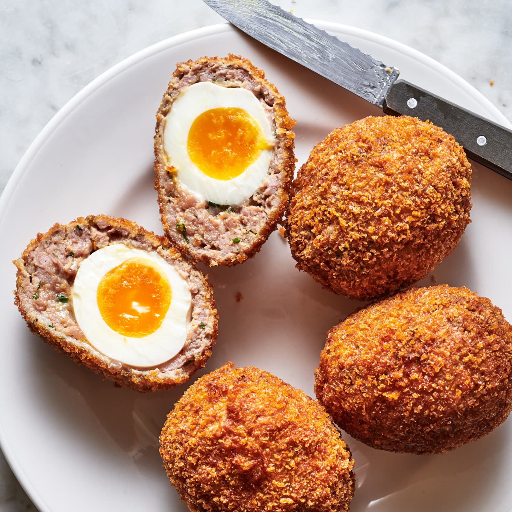

Scotch Eggs

Description
Scotch eggs are a traditional british pub food (not originally from scotland)
which consist of a boiled egg, covered with breakfast sausage, breaded, and fried.
Ingredients
- 5 large eggs, divided.
- 1 small bunch of fresh chives.
- 3 large sprigs fresh parsley.
- 10 ounces uncooked breakfast sausage, casings removed.
- 1 tablespoon prepared English mustard, such as Colemans.
- 1 teaspoon kosher salt, plus more as needed.
- 1/2 teaspoon freshly ground black pepper.
- 1/2 packed teaspoon freshly grated nutmeg.
- 1/3 cup all-purpose flour.
- 1 cup panko breadcrumbs.
- 6 cups (48 ounces) vegetable oil, for deep-frying.